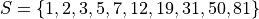
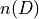
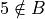
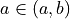
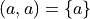
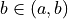
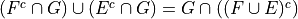

Introduction#
For the problems #1 -9, you are given,



Where S is the universal set and A, B, C and D are subsets of S.
Defintions#
Set Operations
Write the elements of each of the following sets in List Notation,


Laws#
Cardinality Laws
Answer each of the following problems,
Spoiler Alert Why does part d equal part a?


De Morgan’s Laws.
Write the elements of each of the following sets in List Notation. Use the answers from #1 where appriopriate.
Based on the answers to part a - d, what conclusions can you draw about the relationship that exists between the operations of complementation, intersection and union?


Absorption Laws
Write the elements of each of the following sets in List Notation. Use the answers from #1 where appriopriate.
Based on the answers to part a - b, what conclusions can you draw about the relationship that exists between the operations of intersection and union?


Distributive Laws
Write the elements of each of the following sets in List Notation. User the answers from #1 where appriopriate.
Based on the answers to part a - d, what conclusions can you draw about the relationship that exists between the operations of intersection and union?


Counting Laws.
Find the cardinality of each of the following sets.

Why does
?


Relations#
Membership
Determine whether each of the following propositions is true or false.



Equivalence and Equality.
Determine whether each of the following propositions is true or false.


Subsets
Determine whether each of the following propositions is true or false.


Power Sets
Write the following sets in list notation.
The set of all subsets of
.
The set of all subsets of
.
The set of all subsets of
.
In general, for a set P with n elements, how many subsets can be formed from P?
Ordered Pairs
Set theory is the foundation of all modern mathematics. For example, Kazimierz Kuratowski, a Polish mathematician, proposed the following definition of an ordered pair,
Use Kuratowski’s definition of an ordered pair to decide which of the following propositions is true:





Theorems#
Symbolic Propositions
Let E, F and G be three events. Determine which of the following statements are correct and which are incorrect. Justify your answers.



Deductive Proofs
Suppose you are given two sets E and F. Using the properties of sets discussed in class and the ones covered in this classwork, derive an identity for each of the following expressions,


Hint
Use the distributive laws from #5 and then use the Complement Theorem <complement_theorem>